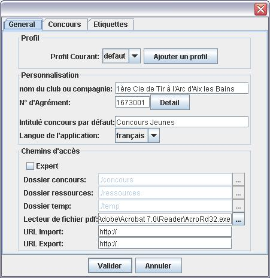
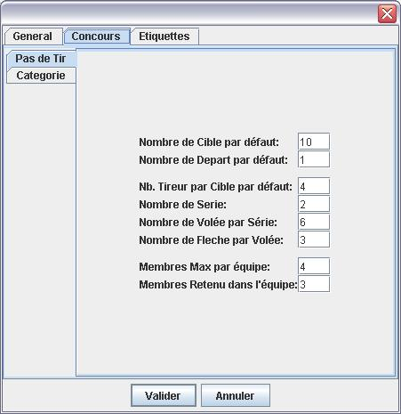

Lors du premier lancement de ConcoursJeunes, une boite de dialogue de paramétrage de l'application va apparaître.
L'application étant pré-paramétré, seul le nom du club et le numero du club devrais être reseignés.
Pour une réaliser une instalation sur un ordinateur pour plusieurs club, il suffit de créer un profil par club.
Sous Linux ou en cas d'instalation non standard d'Acrobat Reader ou d'une solution concurrente, saisir le chemin de votre lecteur pdf dans le champs "Lecteur de fichier pdf". Celui ci est indipensable au bon fonctionnement de l'application.
Il est aussi possible d'éditer via la fenetre de paramétrage les options générale du concours jeunes
